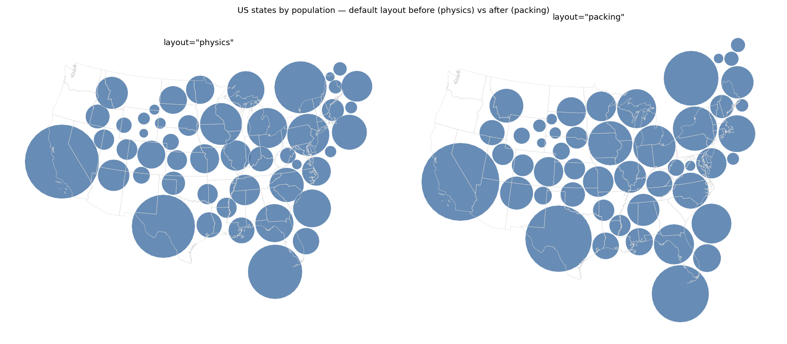

The default layout changes from "physics" to "packing"; check that the new default reads as a sensible Dorling cartogram for a call that passes no layout.
The physics layout is removed, so every call that does not pass layout= now runs the circle packing layout instead. The figure is that change, on the most common call.
physics (before) | packing (after) | |
|---|---|---|
| converged | no — hit the 500-iteration cap | yes, at 205 iterations |
| overlapping pairs at termination | 11 (max penetration 38 km) | 0 |
| wall time | 2.2 s | 0.4 s |
| mean displacement from centroid | 319 km | 347 km |
| max displacement | 703 km | 791 km |
What to look for: the left panel still has visibly overlapping circles in the Northeast and around the Great Lakes, and the whole cloud has drifted north-east of the outline. The right panel is overlap-free and keeps the coastal states pinned closer to their geography, at the price of a slightly larger average displacement — which is what resolving the overlaps costs.
A third commit cleans up layout_type, which the removal left naming a layout that no longer exists: packing and flow-density results both recorded layout_type="physics". Each now records its own registry key ("packing", "flow_density"). This is not visible in the figure — it changes the provenance string on a result, not the placement. The field's one functional job, picking the result class back up in from_dict, is unchanged and now has a round-trip test for every registered layout.
Making packing the default also exposed two gaps in its simulator that the old default happened to avoid; both are fixed in the same commit and are not visible in this figure: an input with no adjacent pairs at all crashed, and a single symbol never met the drift convergence criterion.

Same call, create_symbol_cartogram(us_states, "Population"), under the old default (left) and the new one (right).